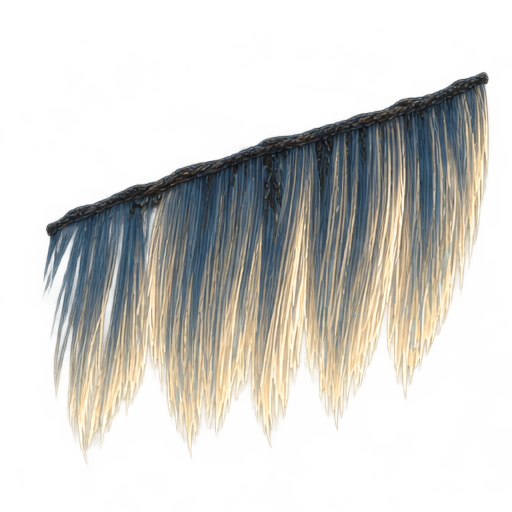
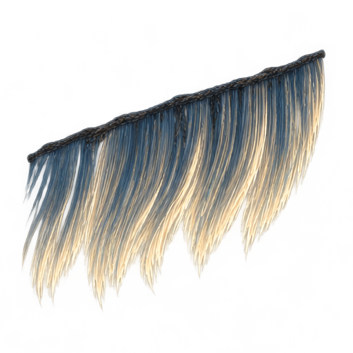
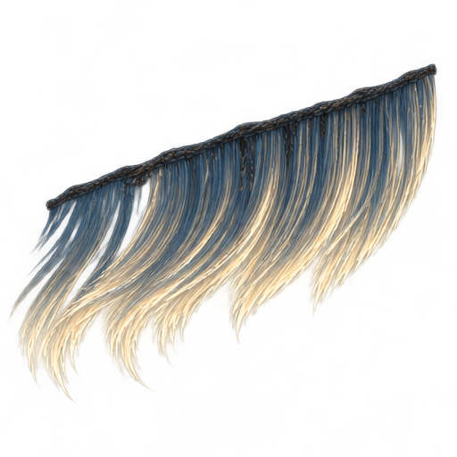
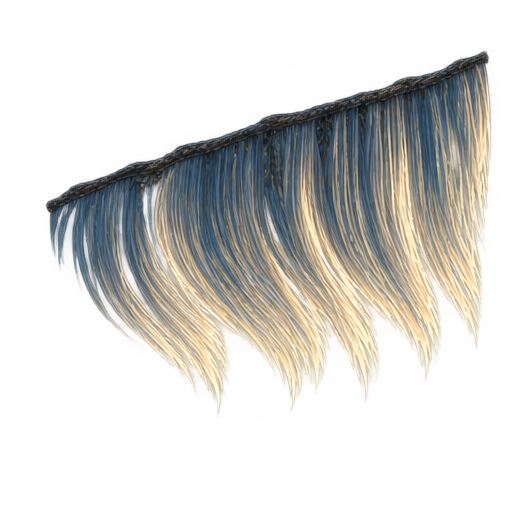
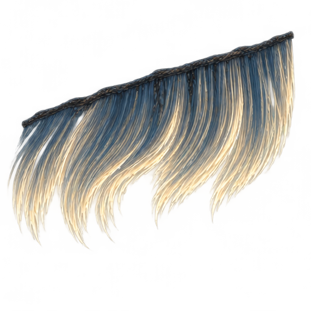
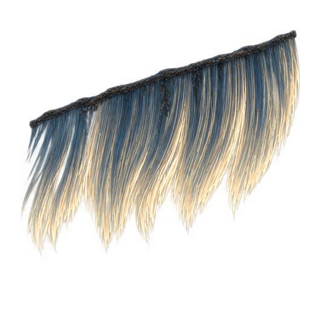

须门遗港 / 独立环境资产样板
先画明确姿态，再用本地 ComfyUI + Wan2.2 TI2V 5B 做引导视频细化，整理为可编辑 Krita 母版。统一画幅、固定根部，保留柔性弯曲与末端滞后。

01 静垂：固定根带，末端松散。

02 受流：上段先弯，末端滞后。

03 顺流：纤维弯曲，保持细束。

04 回流：中段与末端形成反向弧。

05 反摆：回弹后的柔性曲线。

06 缓和：逐渐靠近静垂姿态。
六张原画由内置图像生成工具新绘；Krita中保留为六个可独立修改的绘画图层。中间帧不是逐帧手工绘画，制作来源见下方说明。
暂停 切换明暗背景 加载中
原画关键姿态引导 → Wan视频细化 → 绿色去底与去溢色 → 原画透明边界约束 → 固定根部 → 短段回位过渡 → 12FPS导出。
Wan源片73帧/24FPS，实际3.041667秒；按向上取整规则输出48帧/4秒。动作整体重定时，不是原速直接抽取。
可循环预览；没有把“首尾像素差小”当作严格无缝或自然度通过。
深海暗底 / 12FPS
浅灰底 / 用于检查残影与边缘